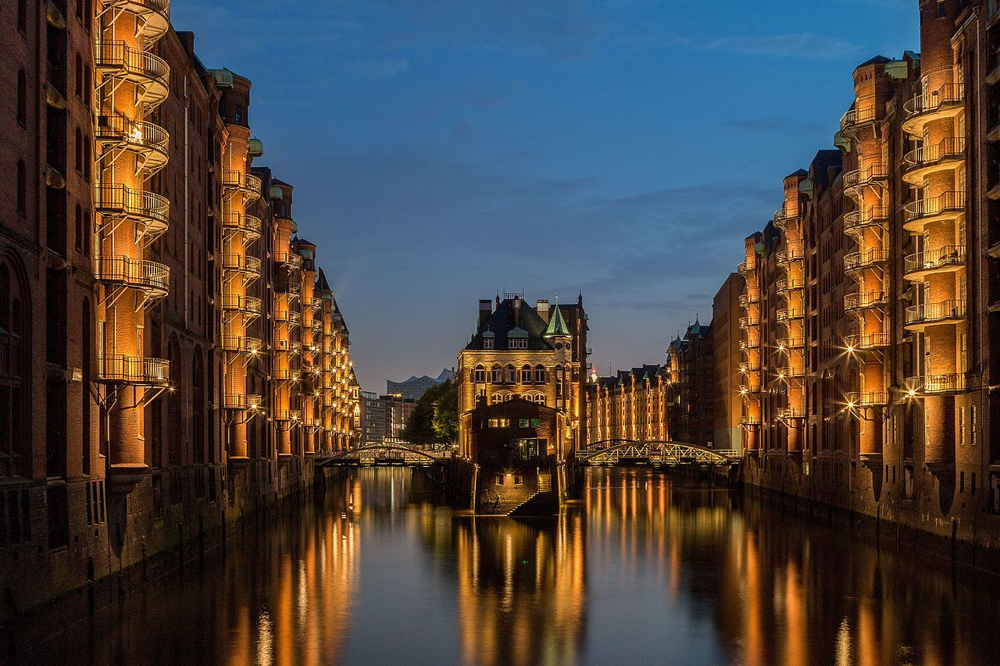

Freie und Hansestadt Hamburg
A port city by Elbe
About

Hamburg is a major international and domestic tourist destination. The Speicherstadt and Kontorhausviertel were declared World Heritage Sites by UNESCO in 2015.[9] Hamburg's rivers and canals are crossed by around 2,500 bridges, making it the city with the highest number of bridges in Europe.[10] Aside from its rich architectural heritage, the city is also home to notable cultural venues such as the Elbphilharmonie and Laeiszhalle concert halls. It gave birth to movements like Hamburger Schule and paved the way for bands including The Beatles. Hamburg is also known for several theatres and a variety of musical shows. St. Pauli's Reeperbahn is among the best-known European entertainment districts